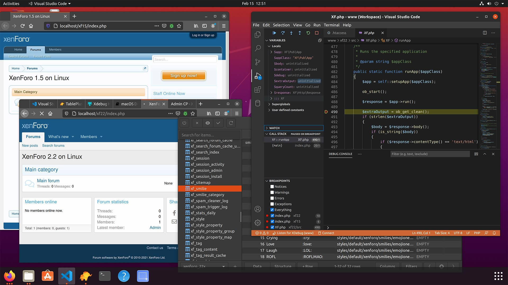
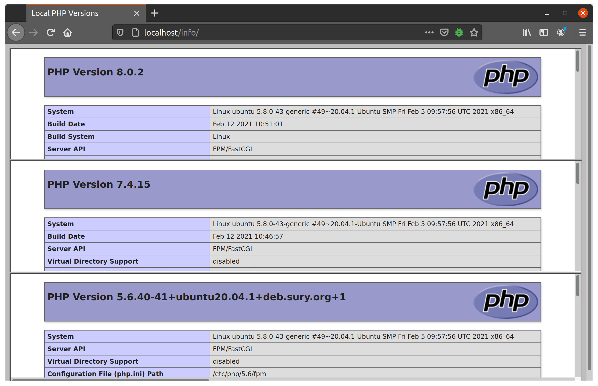

Среда разработки Linux с параллельными версиями PHP
Чтобы получить максимальную отдачу от фреймворка XenForo, вам понадобится локальный веб-сервер, способный запускать XenForo, а также способный отладчик и редактор кода, который понимает код и может помочь вам обойти его.
К счастью, эти требования теперь легко выполнить, и они ничего вам не будут стоить.
Следующий документ и сопровождающее видео помогут вам шаг за шагом установить все необходимое для начала работы в системе на основе Ubuntu Linux.
Как и в нашей среде разработки macOS, эта конфигурация позволит вам запускать несколько версий PHP одновременно, поэтому вы можете запускать экземпляры XenForo 1.5 на PHP 5.6, XenForo 2.1 на PHP 7.4 и XenForo 2.2 на PHP 8.0 при желании без необходимости вручную переключать версию PHP всякий раз, когда вы хотите получить доступ к определенной версии.
Многие объяснения того, что мы здесь делаем, можно найти в нашем руководстве по macOS, поэтому этот документ будет довольно коротким и по существу. Если вы хотите просто взять установочный скрипт, перейдите прямо к конфигурированию, сделайте это здесь.

Установка с помощью Apt
Это руководство основано на системе Ubuntu или Debian, но принципы могут быть применены к любому дистрибутиву Linux, который делает доступными исторические пакеты PHP.
APT - это Advanced Package Tool (расширенный инструмент пакетов), встроенный в дистрибутивы Linux на основе Debian. Это делает установку предварительно настроенного программного обеспечения в Linux намного менее болезненной, чем это было раньше.
Добавление новых репозиториев
Для начала нам нужно указать Apt использовать некоторые дополнительные источники для получения пакетов.
В терминале выполните следующие команды:
#!/bin/bash
# Версии PHP для Ubuntu
sudo add-apt-repository -y ppa:ondrej/php
# TablePlus (опционально)
wget -O - -q http://deb.tableplus.com/apt.tableplus.com.gpg.key | sudo apt-key add -
sudo add-apt-repository "deb [arch=amd64] https://deb.tableplus.com/debian tableplus main"
# ElasticSearch (опционально)
wget -qO - https://artifacts.elastic.co/GPG-KEY-elasticsearch | sudo apt-key add -
echo "deb https://artifacts.elastic.co/packages/7.x/apt stable main" | sudo tee /etc/apt/sources.list.d/elastic-7.x.list
# Получите информацию о последней версии и обновите существующие пакеты
sudo apt update -y
sudo apt upgrade -y
Если вы используете Debian, а не Ubuntu, игнорируйте строку ppa:ondrej/php и запускайте ее вместо перед запуском apt update:
sudo apt-get -y install apt-transport-https lsb-release ca-certificates curl
sudo curl -sSL -o /etc/apt/trusted.gpg.d/php.gpg https://packages.sury.org/php/apt.gpg
sudo sh -c 'echo "deb https://packages.sury.org/php/ $(lsb_release -sc) main" > /etc/apt/sources.list.d/php.list'
Установка пакетов
Далее мы установим необходимое нам программное обеспечение.
#!/bin/bash
# PHP stuff
sudo apt install php5.6-fpm -y
sudo apt install php7.4-fpm -y
sudo apt install php8.0-fpm -y
sudo apt install php-pear -y
sudo apt install php-memcache -y
# PHP модули
for module in xdebug imagick gettext gd bcmath bz2 curl dba xml gmp intl ldap mbstring mysql odbc soap zip enchant sqlite3
do
for version in 7.4 5.6 8.0
do
sudo apt install php${version}-${module} -y
done
done
# Веб-сервер Apache
sudo apt install apache2 -y
# включить модуль Apache FastCGI / FPM
sudo a2enmod proxy_fcgi
# TablePlus (опционально)
sudo apt install tableplus -y
# ElasticSearch (опционально)
sudo apt install elasticsearch -y
# MariaDB (MySQL)
sudo apt install mariadb-server -y
Note
Учитывая наличие в этом скрипте циклов for, я бы посоветовал вам сохранить содержимое поля выше в скрипт с именем install.sh, затем chmod 700 install.sh, чтобы сделать его исполняемым, и запустить это в терминале.
Настройка
После установки всех пакетов нам нужно настроить их в соответствии с нашими потребностями.
MariaDB
После установки MariaDB / MySQL нужно немного поработать.
В терминале запустите следующее:
Terminal
sudo mysql_secure_installation
В этом сценарии примите значения по умолчанию для всего, но убедитесь, что вы сделали пароль root.
Затем запустите клиент MySQL с помощью sudo:
Terminal
sudo mysql -uroot -p
И после того, как у вас появится рабочее приглашение SQL, введите следующие запросы:
USE mysql;
UPDATE user SET plugin = '';
FLUSH PRIVILEGES ;
Теперь вы можете выйти из mysql, и вам больше не нужно будет запускать клиент MySQL с помощью sudo.
Apache
Мы собираемся сохранить всю нашу конфигурацию Apache в одном файле.
Откройте /etc/apache2/sites-enabled/000-default.conf и добавьте следующий код непосредственно перед закрывающей строкой </VirtualHost>.
ServerName localhost
Timeout 3600
<IfModule dir_module>
DirectoryIndex index.html index.php
</IfModule>
DocumentRoot "/home/kier/Documents/www"
<Directory "/home/kier/Documents/www">
Options Indexes FollowSymLinks
AllowOverride all
Require all granted
</Directory>
<FilesMatch \.php$>
SetHandler "proxy:fcgi://localhost:9080"
</FilesMatch>
Эти экземпляры /home/kier/Documents/www необходимо заменить на место, где вы собираетесь хранить свои документы www.
Перед запуском сервиса Apache убедитесь, что каталог существует.
PHP
Нам не нужно сильно менять конфигурацию Ubuntu / Debian по умолчанию для PHP, за исключением некоторых директив Xdebug и инструкций по запуску php-fpm.
Xdebug
Отредактируйте /etc/php/5.6/mods-available/xdebug.ini и дайте ему следующее содержимое для Xdebug 2.5.5:
zend_extension = "xdebug.so"
xdebug.remote_enable = 1
xdebug.remote_connect_back = 1
xdebug.remote_port = 9000
Затем отредактируйте /etc/php/7.4/mods-available/xdebug.ini и /etc/php/5.6/mods-available/xdebug.ini и дайте им обоим следующее содержимое для Xdebug 3.0.x:
zend_extension = "xdebug.so"
xdebug.mode = "debug,develop"
xdebug.discover_client_host = 1
xdebug.client_port = 9000
php-fpm
Взяв номер версии PHP, удалив десятичную точку и добавив полученное целое число к 9000, чтобы 5.6 стало 9056а 8.0 стало 9080, создайте файл с именем x.conf в /etc/php/(version)/fpm/pool.d/x.conf для PHP версий 5.6, 7.4 и 8.0.
Дайте каждому файлу следующее содержание:
user = kier
listen = 127.0.0.1:9056
...изменение имени пользователя и номера порта 90xx соответственно для каждой версии PHP.
Старт сервисов
Теперь вы можете перезапустить все сервисы с новыми конфигурациями:
#!/bin/bash
sudo systemctl restart elasticsearch
sudo systemctl restart mariadb
sudo systemctl restart apache2
sudo systemctl restart php8.0-fpm
sudo systemctl restart php7.4-fpm
sudo systemctl restart php5.6-fpm
Теперь все должно работать, поэтому вы можете следовать инструкциям по работе с несколькими одновременными версиями PHP из руководства по macOS, поместив файлы в каталог www вы указали в своей конфигурации Apache.

Ссылки на ресурсы
- dev.sury.org для пакетов PHP
- Visual Studio Code
- TablePlus
- Xdebug
- Xdebug Helper для Firefox
- Видео этого процесса
Обобщение
Терминальные команды
Запустите команды установки для Ubuntu или Debian
Настройте MariaDB / MySQL
Запустите клиент mysql как root с sudo, затем выполните SQL-запросы, чтобы отключить аутентификацию MySQL на основе подключаемых модулей.
Отредактируйте Apache VirtualHost
Отредактируйте /etc/apache2/sites-available/000-default.conf, чтобы включить настраиваемую конфигураци.
Замените следующие файлы
/etc/php/5.6/mods-available/xdebug.ini/etc/php/7.4/mods-available/xdebug.ini/etc/php/8.0/mods-available/xdebug.ini
Добавьте следующие файлы
Перезапустите сервисы
Используйте sudo systemctl restart для elasticsearch, mariadb, apache2, php8.0-fpm, php7.4-fpm и php5.6-fpm.
Файлы .htaccess, ориентированные на версии PHP
Следующие файлы можно поместить в каталог на вашем веб-сервере, чтобы все файлы PHP в этой папке использовали определенную версию PHP.
Переименуйте файлы из htaccess.txt в .htaccess после помещения их в папку назначения.